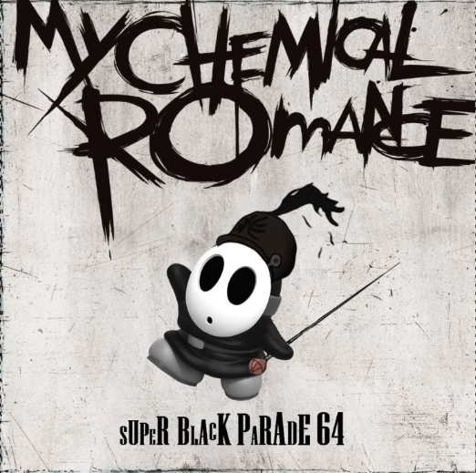

...And Justice for All SM64 Soundfont Cover

Acerca de este álbum
...And Justice for All SM64 Soundfont Cover es una recreación del cuarto álbum de Metallica con los instrumentos del Super Mario 64. Riffs largos, cambios de tempo y el punch seco de One, ahora en timbres de N64.
La portada pone a Princess Peach en el lugar de la Justicia: ojos en blanco, un Super Mushroom en una mano y una espada en la otra, sobre piedra agrietada. Firmado por More Tsua. Para fans del thrash, el chip-tune y los crossovers imposibles.
- 9 pistas en calidad de estudio
- Archivos MP3 y WAV
- Soundfont listo para DAW
- Artwork en alta resolución
Lista de pistas
- Blackened6:41
- ...And Justice for All9:46
- Eye of the Beholder6:25
- One7:26
- The Shortest Straw6:35
- Harvester of Sorrow5:45
- The Frayed Ends of Sanity7:44
- To Live Is to Die9:49
- Dyers Eve5:13
También te puede interesar

Facelift SM64 Soundfont Cover.
Ver detalle